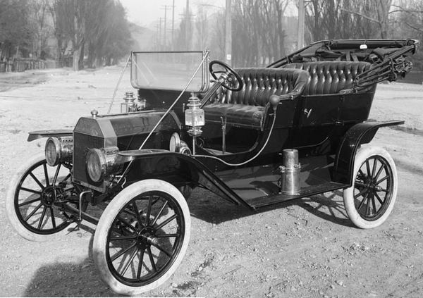
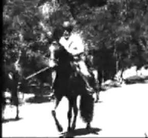
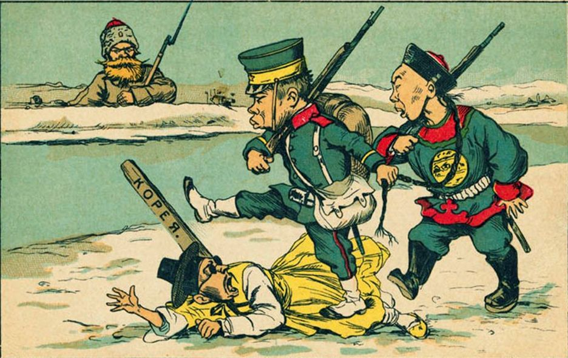
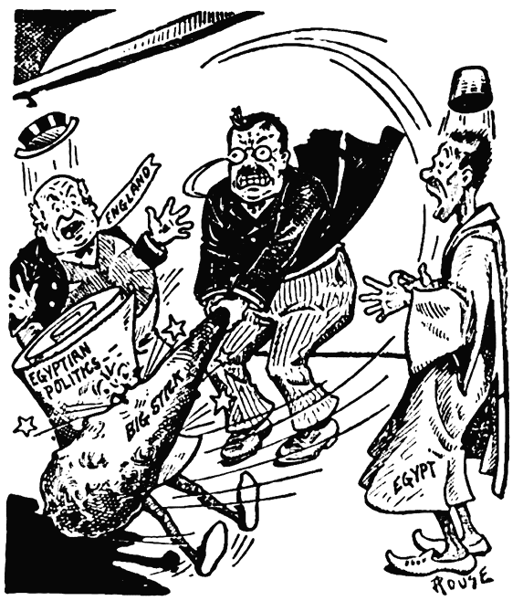
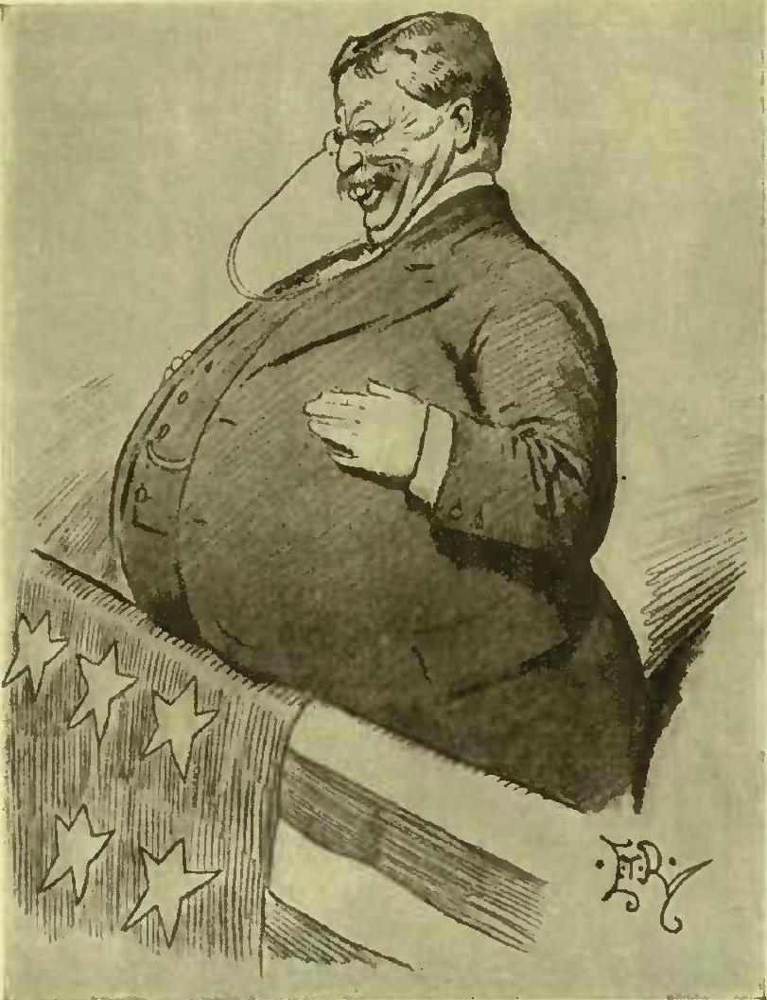
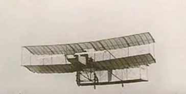
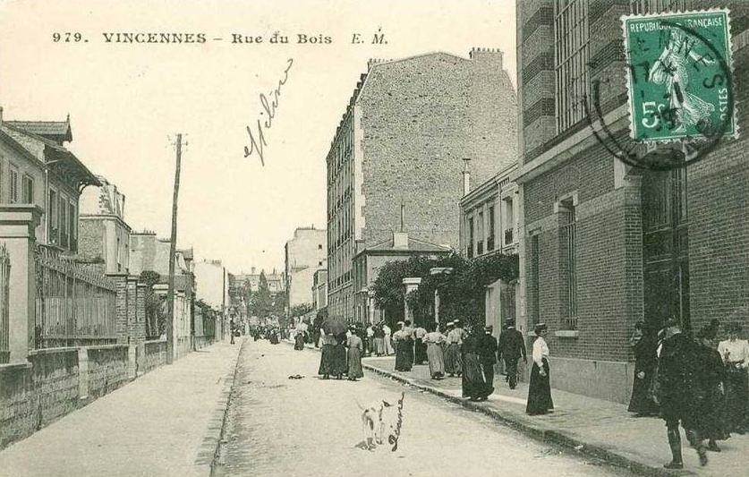

| 
|
|---|

Porfirio Diaz filmed for Lumière by Gabriel Veyre in 1896
The world was a relatively calm and peaceful place in 1910. The slow process
that would lead with a certain inevitability to the World War of 1914-1918 rumbled
on in the background. Both the Austrian and the Turkish empires were in slow dissolution.
The independent Kingdom of Montenegro was proclaimed on 20 August 1910 while the Turks put
down savagely an uprising by the Albanians. In Mexico, the writing was on the wall for
one of the earliest stars of cinema (filmed many times in 1896 by Lumière operator Gabriel
Veyre), Porfirio Diaz, ruler of Mexico since 1876 when Francisco Madero and legendary
freedom-fighter Emiliano Zapata combined to declare the Revolution. There was revolution
in Europe too with the Portuguese monarchy being overthrown on 5 October 1910 and replaced
by a republican government.
In the Far East, China moved troops into Tibet in an attempt to put a stop to British encroachment there and the incorporation of parts of Tibet into British India, but the principal rival to the Western colonial powers and an increasingly expansionist US, the Japanese, confirmed their own emergence as a colonial power by the annexation of Korea.
| 
|
|---|
One of the biggest stars of the international scene, ex-US President Colonel Theodore Roosevelt spent the first part of 1910 continuing his travels around the world. After his African safari, he moved to Egypt in March, where he did some tourism (Luxor and the Pyramids) but also sites associated with the British campaign against the Mahdi) and then made an offensive attempt to wield the big stick, well away from his own backyard by, as he put it privately, giving "the Fuzzy Wuzzies" a telling-off, an intervention that enraged the Egyptian nationalists but also displeaed the Europeans.
| 
|
|---|

Colonel Theodore Roosevelt
Roosevelt then commenced his European tour, moving on to Rome, where he offended the Pope, to Vienna,
Hungary, Paris, where he lectured elegantly at the Sorbonne ("The Man in the Arena") and attended
a military review at Vincennes, Belgium, Holland, Denmark, Norway, where he received his 1906 Nobel peace prize and
delivered an important and sensible speech calling for the creation of a "League of Nations", Berlin,
London, where he attended the funeral of Edward VII, Cambridge and Oxford, where he again lectured
impressively. He then returned to the US to resume his quarrel with his former protégé and successor
Howard. M. Taft
The twentieth-century's technological revolution continued unabated and the focus of  attention in this respect in 1910 was probably the aeroplane, whose development was making impressive strides and which already began to look as though one day it would replace the beautiful giants of the air, the gas balloons.
The cinema by contrast had made rather sedate progress since its effective beginnings in the 1890s and few would have guessed in 1910 that it was on the verge of a very important advance (the development of the hour-long feature film). Films had gradually become longer from the one-minute films of 1895 but still rarely exceeded more than about fifteen minutes. Hollywood was a very small town which did not even have a cinema; in fact such the townsfolk there had very wisely banned such activities. It did however become formally part of the city of Los Angeles in 1910 and the first film was shot there in the year (by D. W. Griffith). The centre of the world of cinema remained France and, more specifically, Vincennes on the outskirts of Paris where Charles Pathé had his studios.
| 
|
|---|
It was Pathé's drive to industrialise the making of films and extend his control over the distribution as well as the production of films that would be largely responsible for the important changes that would take place during the period 1911-1915, but, for the moment, the French giant was more concerned to extend the influence of the company abroad, rather as the Lumières had done in their heyday in 1896-1898. There was already a thriving Pathé subsidiary in Spain and the US branch was established in 1910.